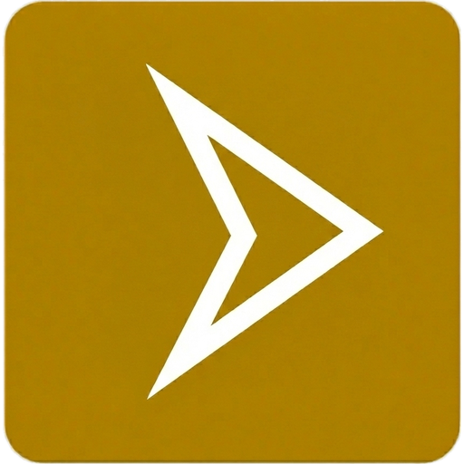

Ayascell Browser
Fast, secure, privacy-focused, and lightweight modern web browser experience. Hızlı, güvenli, gizlilik odaklı ve hafif modern web tarayıcısı deneyimi.
Ayascell PC Optimizer
Advanced Windows PC cleaner and optimizer tool. Offers RAM flushing, junk file removal, startup optimization, and disk speedup. Windows sistemler için gelişmiş temizleyici ve hızlandırıcı. Bellek boşaltma, gereksiz dosya temizleme ve sistem optimizasyonu sağlar.
AUR Store
Graphical package manager for Arch Linux users. Browse, search, and install software from the Arch User Repository seamlessly. Arch Linux kullanıcıları için geliştirilmiş modern paket yöneticisi. AUR depolarındaki yazılımları pratikçe arama ve yükleme imkanı.
AYAS OS APT Repository
Official Debian/Ubuntu APT repository for Ayas OS packages hosted via GitHub Pages infrastructure. Ayas OS paketlerinin sunulduğu Debian/Ubuntu uyumlu resmi APT paket deposu.
AyasFetch
Fast and lightweight terminal system information tool (neofetch alternative) displaying OS and hardware stats. Terminal üzerinde sistem özelliklerini, donanım bilgilerini ve ayarlarını gösteren hızlı bilgi aracı.
Sistem Yönetimi
Comprehensive Windows batch toolkit unifying system maintenance, cleanup, network optimization, repair, and automation into a single solution. Windows sistemler için geliştirilmiş; bakım, temizlik, ağ optimizasyonu, onarım ve otomasyon işlemlerini tek çatı altında toplayan kapsamlı yönetim aracı.